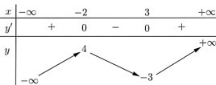
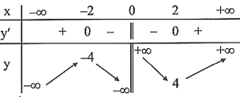
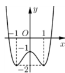
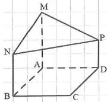
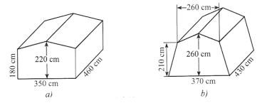
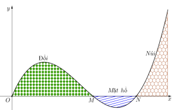

ĐỀ THI TOÁN - ĐỀ SỐ 34 HOT
Phần I: Trắc Nghiệm Nhiều Lựa Chọn
Tóm tắt kiến thức: Giá trị lớn nhất của hàm số
Để tìm giá trị lớn nhất của hàm số, sử dụng bảng biến thiên hoặc đồ thị. Giá trị lớn nhất đạt được tại điểm cực đại hoặc tại biên của miền xác định.
Câu 1:
Cho hàm số \( y = f(x) \) có bảng biến thiên như sau:

Giá trị lớn nhất của hàm số trên là bao nhiêu?
Chọn đáp án:
Lời giải:
Từ bảng biến thiên, hàm số đạt giá trị lớn nhất tại \( x \to +\infty \), với \( y \to +\infty \).
Đáp án: D.
Tóm tắt kiến thức: Tiệm cận của hàm số
Tiệm cận đứng tại \( x = a \) nếu \( \lim_{x \to a} f(x) = \pm \infty \). Tiệm cận ngang tại \( y = b \) nếu \( \lim_{x \to \pm \infty} f(x) = b \).
Câu 2:
Tiệm cận đứng của đồ thị hàm số \( y = \frac{x+2}{x-4} \) là:
Chọn đáp án:
Lời giải:
Hàm số có mẫu số \( x - 4 = 0 \Rightarrow x = 4 \). Khi \( x \to 4 \), \( y \to \pm \infty \), do đó \( x = 4 \) là tiệm cận đứng.
Đáp án: B.
Tóm tắt kiến thức: Tính đơn điệu của hàm số
Hàm số \( y = f(x) \) nghịch biến trên khoảng \( (a; b) \) nếu \( f'(x) < 0 \). Dựa vào bảng biến thiên để xác định khoảng nghịch biến.
Câu 3:
Cho hàm số \( y = f(x) \) có bảng biến thiên như sau:

Hàm số \( y = f(x) \) nghịch biến trên khoảng:
Chọn đáp án:
Lời giải:
Từ bảng biến thiên, \( y' < 0 \) trên khoảng \( (0; 2) \). Do đó, hàm số nghịch biến trên khoảng \( (0; 2) \). Kiểm tra các lựa chọn, chỉ có \( (1; 2) \subset (0; 2) \).
Đáp án: C.
Tóm tắt kiến thức: Phép toán vectơ
Cho hai vectơ \( \vec{u} = (a_1; b_1; c_1) \), \( \vec{v} = (a_2; b_2; c_2) \), thì \( \vec{u} - \vec{v} = (a_1 - a_2; b_1 - b_2; c_1 - c_2) \).
Câu 4:
Trong không gian \( Oxyz \), cho \( \vec{u} = (4; -2; 3) \) và \( \vec{v} = (1; 3; -2) \). Vectơ \( \vec{u} - \vec{v} \) có tọa độ là:
Chọn đáp án:
Lời giải:
\( \vec{u} - \vec{v} = (4 - 1; -2 - 3; 3 - (-2)) = (3; -5; 5) \).
Đáp án: B.
Tóm tắt kiến thức: Tính đơn điệu của hàm số
Hàm số nghịch biến trên khoảng mà đồ thị có xu hướng giảm. Dựa vào đồ thị hoặc bảng biến thiên để xác định.
Câu 5:
Cho hàm số \( f(x) \) có đồ thị như hình vẽ dưới đây:

Hàm số đã cho nghịch biến trên khoảng nào trong các khoảng sau?
Chọn đáp án:
Lời giải:
Từ đồ thị, hàm số giảm trên khoảng \( (0; 1) \), do đó nghịch biến trên \( (0; 1) \).
Đáp án: A.
Tóm tắt kiến thức: Phương trình mặt phẳng
Mặt phẳng đi qua 3 điểm hoặc đi qua 1 điểm và song song với một vectơ có phương trình tổng quát \( ax + by + cz + d = 0 \), với \( (a; b; c) \) là vectơ pháp tuyến.
Câu 6:
Phương trình tổng quát của mặt phẳng đi qua \( P(1, 0, -2) \), \( Q(2, 1, 1) \), và song song với vectơ \( \vec{b} = (4, -3, 2) \) là:
Chọn đáp án:
Lời giải:
\( \overrightarrow{PQ} = (1; 1; 3) \), vectơ pháp tuyến \( \vec{n} = \overrightarrow{PQ} \times \vec{b} = (11; 10; -7) \). Phương trình mặt phẳng qua \( P(1; 0; -2) \): \( 11(x-1) - 10y - 7(z+2) = 0 \Rightarrow 11x - 10y - 7z - 25 = 0 \).
Đáp án: C.
Tóm tắt kiến thức: Phương trình mặt cầu
Mặt cầu tâm \( I(a; b; c) \), bán kính \( R \): \( (x-a)^2 + (y-b)^2 + (z-c)^2 = R^2 \). Bán kính là khoảng cách từ tâm đến điểm thuộc mặt cầu.
Câu 7:
Trong không gian \( Oxyz \), cho mặt cầu \( (S) \) có tâm \( I(-1; 2; 1) \) và đi qua điểm \( M(3; -1; 4) \). Phương trình của mặt cầu \( (S) \) là:
Tóm tắt kiến thức: Phương sai của mẫu số liệu ghép nhóm
Phương sai: \( s^2 = \frac{1}{n} \sum f_i (x_i - \bar{x})^2 \), với \( \bar{x} = \frac{\sum f_i x_i}{n} \).
Câu 8:
Một cửa hàng nội thất thống kê số tiền (đơn vị: triệu đồng) mà 50 khách hàng mua hàng, với bảng số liệu sau:

| Nhóm | \([30; 40)\) | \([40; 50)\) | \([50; 60)\) | \([60; 70)\) | \([70; 80)\) | \([80; 90)\) |
|---|---|---|---|---|---|---|
| Giá trị đại diện | 35 | 45 | 55 | 65 | 75 | 85 |
| Tần số | 5 | 12 | 15 | 10 | 6 | 2 |
Chọn đáp án:
Lời giải:
\( \bar{x} = \frac{5 \cdot 35 + 12 \cdot 45 + 15 \cdot 55 + 10 \cdot 65 + 6 \cdot 75 + 2 \cdot 85}{50} = 56,2 \).
\( s^2 = \frac{5(35-56,2)^2 + 12(45-56,2)^2 + 15(55-56,2)^2 + 10(65-56,2)^2 + 6(75-56,2)^2 + 2(85-56,2)^2}{50} \approx 169,94 \).
Đáp án: B.
Tóm tắt kiến thức: Tích phân
Tính tích phân của tổ hợp tuyến tính: \( \int (af(x) + bg(x)) dx = a \int f(x) dx + b \int g(x) dx \).
Câu 9:
Nếu \( \int_0^1 f(x) dx = 2 \) và \( \int_1^0 g(x) dx = -3 \), thì \( \int_0^1 [3f(x) - 4g(x)] dx \) là:
Chọn đáp án:
Lời giải:
\( \int_0^1 [3f(x) - 4g(x)] dx = 3 \int_0^1 f(x) dx - 4 \int_0^1 g(x) dx \). Vì \( \int_1^0 g(x) dx = -3 \Rightarrow \int_0^1 g(x) dx = 3 \), nên \( 3 \cdot 2 - 4 \cdot 3 = 6 - 12 = -6 \).
Đáp án: B.
Tóm tắt kiến thức: Khoảng cách trong hình học không gian
Khoảng cách từ điểm đến mặt phẳng là độ dài đường vuông góc từ điểm đó đến mặt phẳng.
Câu 10:
Cho hình lăng trụ đúng \( ABC.A'B'C' \), có đáy là tam giác vuông cân tại \( B \) và \( AB = 6 \). Tính khoảng cách từ điểm \( C \) đến mặt phẳng \( (ABB'A') \).
Chọn đáp án:
Lời giải:
Tam giác \( ABC \) vuông cân tại \( B \Rightarrow CB = BA = 6 \). Vì \( CB \perp BA \) và \( CB \perp BB' \), nên \( CB \perp (ABB'A') \). Do đó, \( d(C, (ABB'A')) = CB = 6 \).
Đáp án: D.
Tóm tắt kiến thức: Cấp số nhân
Trong cấp số nhân, số hạng thứ \( n \): \( u_n = u_1 \cdot q^{n-1} \), với \( q \) là công bội.
Câu 11:
Cho cấp số nhân \( (u_n) \) với \( u_1 = 4 \) và công bội \( q = -2 \). Khi đó, \( u_3 \) bằng:
Chọn đáp án:
Lời giải:
\( u_3 = u_1 \cdot q^{3-1} = 4 \cdot (-2)^2 = 4 \cdot 4 = 16 \).
Đáp án: A.
Tóm tắt kiến thức: Phương trình lũy thừa
Phương trình \( a^x = b \) có nghiệm \( x = \log_a b \). Với \( 2^{x+1} = 16 \), viết lại \( 16 = 2^4 \).
Câu 12:
Nghiệm của phương trình \( 2^{x+1} = 16 \) là:
Chọn đáp án:
Lời giải:
\( 2^{x+1} = 16 = 2^4 \Rightarrow x + 1 = 4 \Rightarrow x = 3 \).
Đáp án: A.
Phần II: Trắc Nghiệm Đúng/Sai
Tóm tắt kiến thức: Tiệm cận xiên và giá trị cực trị
Hàm số \( f(x) = \frac{ax^2 + bx + c}{x + d} \) có tiệm cận xiên \( y = mx + n \) nếu \( m = \lim_{x \to \infty} \frac{f(x)}{x} \), \( n = \lim_{x \to \infty} [f(x) - mx] \). Giá trị cực trị tìm bằng đạo hàm.
Câu 13:
Cho hàm số \( f(x) = \frac{2x^2 + 3x - 5}{x + 3} \), biết đồ thị hàm số có tiệm cận xiên là đường thẳng \( \Delta: y = ax + b \). Xét các phát biểu sau:
Chọn đáp án cho từng phát biểu:
a)
b)
c)
d)
Lời giải:
a) Sai. \( f'(x) = \frac{2x^2 + 12x + 14}{(x+3)^2} \).
b) Đúng. \( f'(x) = 0 \Rightarrow x = -3 + \sqrt{2} \). \( f(-3 + \sqrt{2}) = -9 + 4\sqrt{2} \), nhỏ hơn \( f(-2) = -3 \), \( f(0) = -\frac{5}{3} \).
c) Sai. Tiệm cận xiên: \( y = 2x - 3 \). Khoảng cách từ \( O(0; 0) \) đến \( 2x - y - 3 = 0 \): \( d = \frac{3}{\sqrt{5}} = \frac{3\sqrt{5}}{5} \neq 3\sqrt{5} \).
d) Đúng. Tiệm cận xiên cắt trục hoành tại \( A(0; -3) \), trục tung tại \( B\left(\frac{3}{2}; 0\right) \). Diện tích tam giác \( OAB = \frac{1}{2} \cdot 3 \cdot \frac{3}{2} = \frac{9}{4} > 2 \).
Đáp án: a) Sai, b) Đúng, c) Sai, d) Đúng.
Tóm tắt kiến thức: Hình học không gian
Phương trình mặt phẳng, đường thẳng, và mặt cầu trong không gian. Tính chất ngoại tiếp tứ diện và khoảng cách.
Câu 14:
Trong không gian \( Oxyz \), cho \( A(2; 0; 0) \), \( B(0; 2; 0) \), \( C(0; 0; -3) \). Xét các phát biểu sau:
Chọn đáp án cho từng phát biểu:
a)
b)
c)
d)
Lời giải:
a) Đúng. Phương trình mặt phẳng \( (ABC) \): \( 3x + 3y - 2z - 6 = 0 \), vectơ pháp tuyến \( \vec{n} = (3; 3; -2) \).
b) Đúng. \( \overrightarrow{BC} = (0; -2; -3) \), đường thẳng qua \( A(2; 0; 0) \), song song \( \overrightarrow{BC} \): \( \left\{ \begin{array}{l} x = 2 \\ y = 2t \\ z = 3t \end{array} \right. \).
c) Sai. Mặt cầu ngoại tiếp: tâm \( I(1; 1; -\frac{3}{2}) \), bán kính \( IA = \frac{\sqrt{17}}{2} \neq \sqrt{5} \).
d) Đúng. Trọng tâm \( G\left(\frac{2}{3}; \frac{2}{3}; -1\right) \), hình chiếu lên \( (Oxy) \): \( M\left(\frac{2}{3}; \frac{2}{3}; 0\right) \). Thay vào: \( 3 \cdot \frac{2}{3} - 6 \cdot \frac{2}{3} + 0 = -2 \).
Đáp án: a) Đúng, b) Đúng, c) Sai, d) Đúng.
Tóm tắt kiến thức: Xác suất có điều kiện
Xác suất có điều kiện: \( P(A|B) = \frac{P(A \cap B)}{P(B)} \). Xác suất toàn phần: \( P(B) = \sum P(A_i) \cdot P(B|A_i) \).
Câu 15:
Lớp 12C có 25 học sinh nam và 20 học sinh nữ. Có 5 bạn tên Anh, trong đó có 3 bạn nam, 2 bạn nữ. Thầy giáo gọi ngẫu nhiên 1 bạn lên bảng kiểm tra bài cũ. Gọi \( A \): "Học sinh được gọi tên Anh"; \( B \): "Học sinh nam"; \( C \): "Học sinh nữ". Xét các phát biểu sau:
Chọn đáp án cho từng phát biểu:
a)
b)
c)
d)
Lời giải:
a) Đúng. \( P(A) = \frac{5}{25+20} = \frac{5}{45} = \frac{1}{9} \).
b) Sai. \( P(A|B) = \frac{P(A \cap B)}{P(B)} = \frac{\frac{3}{45}}{\frac{25}{45}} = \frac{3}{25} \neq \frac{2}{25} \).
c) Đúng. \( P(A|C) = \frac{P(A \cap C)}{P(C)} = \frac{\frac{2}{45}}{\frac{20}{45}} = \frac{2}{20} = \frac{1}{10} \).
d) Sai. \( P(B|A) = \frac{P(A \cap B)}{P(A)} = \frac{\frac{3}{45}}{\frac{5}{45}} = \frac{3}{5} \neq \frac{2}{5} \).
Đáp án: a) Đúng, b) Sai, c) Đúng, d) Sai.
Tóm tắt kiến thức: Vận tốc và khoảng cách
Khoảng cách giữa hai vật: \( d(t) = |s_2(t) - s_1(t)| \). Điểm gần nhất khi \( d'(t) = 0 \), tức \( v_1(t) = v_2(t) \).
Câu 16:
Một con sư tử đuổi theo một con ngựa vằn, với vận tốc \( v_1(t) = 15e^{-0.1t} \), \( v_2(t) = 20 - 20e^{-0.1t} \) (m/s, \( t \in [0; 60] \)). Xét các phát biểu sau:
Chọn đáp án cho từng phát biểu:
a)
b)
c)
d)
Lời giải:
a) Sai. \( v_2(0) = 20 - 20e^0 = 0 \), đúng nhưng cần kiểm tra ngữ cảnh.
b) Đúng. \( v_1'(t) = -1.5e^{-0.1t} < 0 \), \( v_2'(t) = 2e^{-0.1t} > 0 \).
c) Sai. \( v_1'(t) < 0 \), \( v_2'(t) > 0 \), nên \( v_1'(t) \neq v_2'(t) \). Gần nhất khi \( v_1(t) = v_2(t) \).
d) Sai. Khoảng cách ngắn nhất tại \( t \approx 5,6 \), \( d(t) \approx 1,92 \neq 1,42 \).
Đáp án: a) Sai, b) Đúng, c) Sai, d) Sai.
Phần III: Trắc Nghiệm Trả Lời Ngắn
Tóm tắt kiến thức: Góc giữa hai mặt phẳng
Góc giữa hai mặt phẳng được tính qua cosin góc giữa hai vectơ pháp tuyến: \( \cos \theta = \frac{|\vec{n_1} \cdot \vec{n_2}|}{|\vec{n_1}| |\vec{n_2}|} \).
Câu 17:
Một phần thiết kế công trình có dạng như hình bên, trong đó \( ABCD \) là hình vuông cạnh 6 m, \( AM, BN, DP \) cùng vuông góc với \( (ABCD) \), \( AM = 4 \) m, \( BN = 3 \) m, \( DP = 2 \) m. Góc giữa hai mặt phẳng \( (ABCD) \) và \( (MNP) \) (làm tròn đến hàng đơn vị của độ) là \( n^\circ \). Giá trị của \( n \) là bao nhiêu?

Nhập đáp án:
Lời giải:
Đặt \( A(0; 0; 0) \), \( B(6; 0; 0) \), \( D(0; 6; 0) \), \( M(0; 0; 4) \), \( N(6; 0; 3) \), \( P(0; 6; 2) \). Mặt phẳng \( (MNP) \): \( x + 2y + 6z - 24 = 0 \), \( \vec{n_1} = (1; 2; 6) \). Mặt phẳng \( (ABCD) \): \( \vec{n_2} = (0; 0; 1) \). \( \cos n = \frac{|1 \cdot 0 + 2 \cdot 0 + 6 \cdot 1|}{\sqrt{1^2 + 2^2 + 6^2} \cdot \sqrt{0^2 + 0^2 + 1^2}} = \frac{6}{\sqrt{41}} \). Suy ra \( n \approx 20 \).
Đáp án: 20.
Tóm tắt kiến thức: Thể tích khối lăng trụ
Thể tích khối lăng trụ: \( V = S_{\text{đáy}} \cdot h \). Diện tích đáy ngũ giác đều: \( S = \frac{5a^2 \sqrt{5 + 2\sqrt{5}}}{4} \).
Câu 18:
Để chuẩn bị cho hoạt động cắm trại, bạn An tìm hiểu các mẫu lều cắm trại có dạng khối lăng trụ đứng ngũ giác với kích thước như trong hình a và hình b.

Thể tích chênh lệch của hai lều là bao nhiêu (m\(^3\))?
Nhập đáp án:
Lời giải:
Thiếu thông tin về kích thước cụ thể của lều (cạnh đáy, chiều cao). Không thể tính thể tích chênh lệch chính xác. Cần cung cấp thêm dữ liệu về hình a và hình b.
Đáp án: Không xác định.
Tóm tắt kiến thức: Cực trị của hàm số
Cực trị của hàm số được xác định bằng cách giải \( f'(x) = 0 \) và kiểm tra dấu của \( f''(x) \) hoặc bảng biến thiên.
Câu 19:
Lát cắt ngang của một vùng đất được mô hình hóa là một phần hàm số bậc ba \( y = f(x) \) có đồ thị như hình vẽ.

Biết khoảng cách hai bên chân đồi \( OM = 2 \) km, độ rộng của hồ nước \( MN = 1 \) km, và ngọn đồi cao 528 m. Độ sâu nhất của hồ nước là bao nhiêu mét (làm tròn đến hàng đơn vị)?
Nhập đáp án:
Lời giải:
\( OM = 2 \), \( ON = 3 \), \( M(2; 0) \), \( N(3; 0) \), ngọn đồi cao 528 m = 0,528 km. Hàm số \( y = f(x) = a x (x-2)(x-3) \). Đạo hàm \( f'(x) = a (3x^2 - 10x + 6) = 0 \Rightarrow x = \frac{5 \pm \sqrt{7}}{3} \). Cực đại tại \( x = \frac{5 - \sqrt{7}}{3} \), \( f\left(\frac{5 - \sqrt{7}}{3}\right) = 0,528 \Rightarrow a \approx 0,25 \). Cực tiểu tại \( x = \frac{5 + \sqrt{7}}{3} \), \( f\left(\frac{5 + \sqrt{7}}{3}\right) \approx -0,1578 \) km \( \approx 158 \) m.
Đáp án: 158.
Tóm tắt kiến thức: Phương trình vi phân
Phương trình \( S'(t) = k \sqrt{S(t)} \) có nghiệm \( \sqrt{S(t)} = \frac{k}{2}t + C \). Điều kiện ban đầu xác định \( k \) và \( C \).
Câu 20:
Trên một mặt hồ rộng 470 m\(^2\), một đợt tảo lan với tốc độ \( S'(t) = k \sqrt{S(t)} \). Khi mới phát hiện, \( S(0) = 16 \) m\(^2\), sau 3 ngày \( S(3) = 32 \) m\(^2\). Hỏi sau bao nhiêu ngày tảo phủ kín mặt hồ (làm tròn đến hàng đơn vị)?
Nhập đáp án:
Lời giải:
\( S'(t) = k \sqrt{S(t)} \Rightarrow \sqrt{S(t)} = \frac{k}{2}t + C \). Với \( S(0) = 16 \Rightarrow C = 4 \), \( S(3) = 32 \Rightarrow \frac{k}{2} \cdot 3 + 4 = \sqrt{32} = 4\sqrt{2} \Rightarrow k = \frac{2}{3}(4\sqrt{2} - 4) \). \( S(t) = \left[\frac{1}{3}(4\sqrt{2} - 4)t + 4\right]^2 \). Giải \( S(t) = 470 \Rightarrow t \approx 32 \).
Đáp án: 32.
Tóm tắt kiến thức: Tối ưu hóa trong không gian
Tổng khoảng cách \( EM + EN \) lớn nhất khi \( E \) nằm trên giao điểm của đường thẳng qua tâm mặt cầu và trung điểm \( MN \) với mặt cầu.
Câu 21:
Trong không gian \( Oxyz \) (đơn vị: km), trạm thu phát sóng tại \( M(4; -4; 2) \) và \( N(6; 0; 6) \). Gọi \( E(a; b; c) \) là điểm trên ranh giới vùng phủ sóng sao cho tổng khoảng cách \( EM + EN \) lớn nhất. Tính \( T = a + b + c \).
Nhập đáp án:
Lời giải:
Mặt cầu tâm \( I(1; 2; 2) \), bán kính \( R = 3 \). Trung điểm \( MN \): \( H(5; -2; 4) \). Đường thẳng \( IH \): \( \left\{ \begin{array}{l} x = 1 + 2t \\ y = 2 - 2t \\ z = 2 + t \end{array} \right. \). Giao với mặt cầu: \( t = \pm 1 \). Điểm \( E_1(3; 0; 3) \), \( E_2(-1; 4; 1) \). \( EH \) lớn nhất tại \( E_2 \), \( T = -1 + 4 + 1 = 4 \).
Đáp án: 4.
Tóm tắt kiến thức: Xác suất Bayes
Xác suất Bayes: \( P(A|B) = \frac{P(A) \cdot P(B|A)}{P(B)} \), với \( P(B) \) tính bằng xác suất toàn phần.
Câu 22:
Trường THPT A có 20% học sinh tham gia câu lạc bộ âm nhạc, trong đó 85% biết chơi guitar. Ngoài ra, 10% học sinh không tham gia cũng biết chơi guitar. Chọn ngẫu nhiên 1 học sinh biết chơi guitar. Xác suất học sinh đó thuộc câu lạc bộ âm nhạc là bao nhiêu?
Nhập đáp án:
Lời giải:
Gọi \( A \): thuộc câu lạc bộ, \( B \): biết chơi guitar. \( P(A) = 0,2 \), \( P(\bar{A}) = 0,8 \), \( P(B|A) = 0,85 \), \( P(B|\bar{A}) = 0,1 \). \( P(B) = 0,2 \cdot 0,85 + 0,8 \cdot 0,1 = 0,25 \). \( P(A|B) = \frac{0,2 \cdot 0,85}{0,25} = 0,68 \).
Đáp án: 0,68.